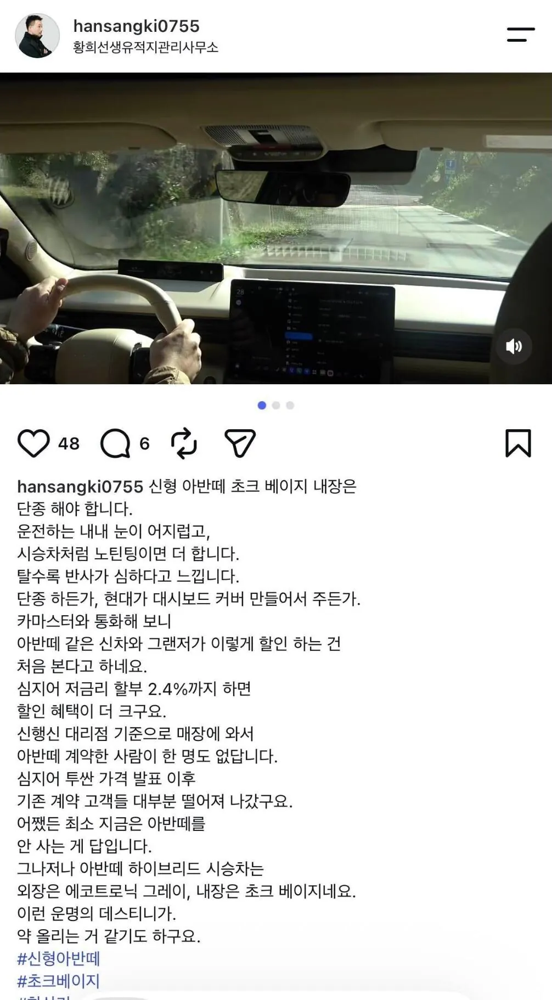

진성 현기빠였던 분도 우주명차는 못 참고 까가 되버리는 바람직한 현상...

진성 현기빠였던 분도 우주명차는 못 참고 까가 되버리는 바람직한 현상...
그랜저 르블랑하브를 4천주고 샀는데...ㄷㄷ
2.0엔진이라 자동차세도 더나옴 ㄷㄷ
황사가 너무 심해서 장각이 살아돌아온 줄 아셨다던데 ㅋㅋㅋㅋ
우주명차 붕어떼...
한상기님이 저렇게말할정도면 ㅋㅋㅋ
cn7아 오래오래가자...
한상기를 '현빠'라고 말하는게 참 ㅋㅋㅋㅋ
진심으로 CN8 산 사람은 중국차 산 사람 급의 저능아임
굳이 차 산 사람을 까는 이유가 뭔데
쉐보레와 르노산애들은 병신소리 듣는데 뭐.
저분 구매했다고...
한상기는 리뷰어잖아
1.6T 엔진 겁나좋은데 그걸 버리고 2.0을 택하냐....
아반떼 진짜 우주명차인데 왜 미친짓하는거냐고